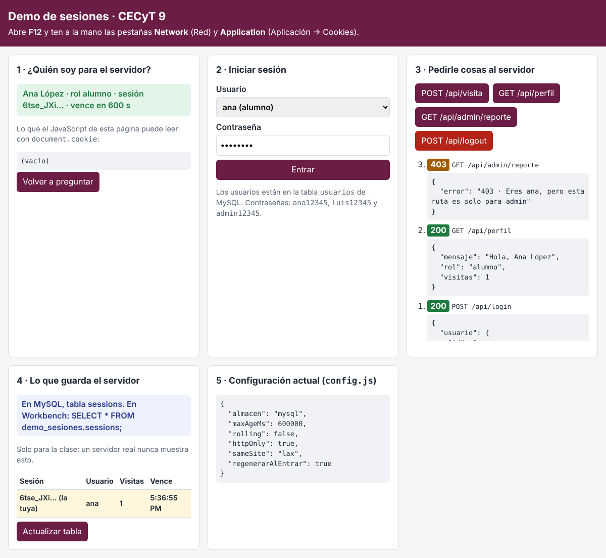

Objetivo
Identificar qué riesgos tiene el login actual del sistema CECyT9 (usuario/contraseña con sesión simple,
sin JWT) antes de implementar JWT en la semana 13, y proponer controles.
Como base se programó la demo demo-sesiones/: el servidor con express-session
guardando las sesiones en MySQL (tabla sessions) y la página public/demo.js.
demo-sesiones/app.js: pasos 1 a 7 de la clase (configuración de la sesión, login conregenerate, logout condestroy,requiereSesion(401),requiereRol(403) yvencida()).demo-sesiones/public/demo.js: escrito y comentado por mí (usatextContentpara todo lo que viene del servidor).npm run probar: 21 de 21 pruebas pasaron.
Matriz de riesgos del login actual
Escala: probabilidad e impacto de 1 (bajo) a 3 (alto). Riesgo = probabilidad × impacto (1-2 bajo, 3-4 medio, 6-9 alto).
| # | Amenaza | Cómo pasa en el login actual | Probabilidad | Impacto | Riesgo | Control propuesto |
|---|---|---|---|---|---|---|
| R1 | Fuerza bruta / adivinar contraseñas | El endpoint de login acepta intentos ilimitados; un script puede probar miles de contraseñas. | 3 | 3 | 9 · Alto | Límite de intentos por IP/usuario (ej. 5 en 15 min) con bloqueo temporal, captcha después de varios fallos (semana 14), contraseñas de 8+ caracteres y hash con bcrypt. |
| R2 | Secuestro de sesión (robo de la cookie) | Quien copia connect.sid entra sin contraseña (prueba P-11: el atacante recibió 200 «Hola, Ana López»). |
2 | 3 | 6 · Alto | Cookie httpOnly + secure (HTTPS) + sameSite; expiración corta;
logout que destruya la sesión en el servidor; en la semana 13, JWT con expiración corta y lista negra. |
| R3 | XSS que roba la sesión | Si la página mete datos del servidor con innerHTML, un nombre con <script>
se ejecuta; con httpOnly: false el script lee document.cookie (P-09). |
2 | 3 | 6 · Alto | Usar textContent (o React, que escapa), validar y sanear entradas, mantener
httpOnly: true, cabecera Content-Security-Policy. |
| R4 | Fijación de sesión | Con regenerarAlEntrar: false el id no cambia al entrar; el atacante planta su id y queda
dentro como la víctima (P-13). |
1 | 3 | 3 · Medio | req.session.regenerate() al iniciar sesión (P-14: el atacante recibe 401). |
| R5 | Sesión que no vence | Sin maxAge o con rolling mal entendido, una cookie robada sirve indefinidamente. |
2 | 2 | 4 · Medio | Vencimiento decidido por el servidor (vencida()), maxAge corto;
con JWT, exp corto + renovación (refresh) solo con token válido. |
| R6 | Enumeración de usuarios | Si el login respondiera distinto para «usuario no existe» y «contraseña mala», se podrían descubrir cuentas. | 2 | 1 | 2 · Bajo | Mismo mensaje y mismo código (401 «Usuario o contraseña incorrectos») en los dos casos (P-03). |
| R7 | Credenciales o secretos en el repositorio | Subir el .env con la contraseña de MySQL o el SESSION_SECRET a GitHub. |
2 | 3 | 6 · Alto | .env en .gitignore, solo se sube .env.example; secretos largos y distintos por ambiente. |
| R8 | Contraseñas expuestas si se filtra la BD | Guardar contraseñas en texto plano o devolver el hash en las respuestas. | 1 | 3 | 3 · Medio | bcrypt con costo 10; el modelo nunca devuelve contrasena_hash (solo lo usa el login). |
| R9 | Acceso a rutas de admin con otro rol | Un alumno con sesión válida intenta /api/admin/reporte. |
2 | 2 | 4 · Medio | Middleware de rol que responde 403 (P-07), siempre después del de sesión (401). |
| R10 | CSRF (petición desde otro sitio) | Otro sitio hace que el navegador mande la cookie de sesión en un POST. | 1 | 2 | 2 · Bajo | sameSite: 'lax' (o 'strict'); con JWT en Authorization el
token no viaja solo. |
| R11 | Sesiones perdidas al reiniciar o escalar | Con el almacén en memoria, un reinicio cierra la sesión de todos (P-15). | 2 | 1 | 2 · Bajo | Guardar las sesiones en MySQL (o usar JWT, que no depende del servidor). |
401 contra 403 (prueba P-08)
| Situación | Código | ¿Qué significa? |
|---|---|---|
| Sin sesión | 401 | El servidor no sabe quién eres: no hay sesión o ya venció. |
| Con sesión de ana | 403 | Sabe que eres ana (alumno), pero la ruta es solo para admin. |
| Con sesión de admin | 200 | Sabe quién eres y tienes permiso: entrega el reporte. |
Respuestas de la guía
P-03 · ¿Por qué los dos casos dicen lo mismo? Si el mensaje cambiara cuando el usuario no existe, un atacante podría averiguar qué cuentas existen y concentrar la fuerza bruta en ellas.
P-04 · ¿La cookie dice «ana» o «alumno»? Ninguno. La cookie solo lleva el id de la sesión
firmado (s%3A<id>.<firma>). El usuario y el rol están en el servidor, en la columna
data de la tabla sessions.
P-11 · Tres controles que limitan el daño de una cookie robada: httpOnly (el
JavaScript no la puede leer), expiración corta (maxAge + vencida()) y logout con
destroy (la sesión deja de existir en el servidor). Además secure en producción.
P-12 · ¿Quién decide que la sesión venció con rolling: false? El servidor.
Aunque el Expires del Set-Cookie cambie en cada respuesta, la función
vencida() compara con la hora en que se creó la sesión y responde 401 «Tu sesión venció».
Preguntas de cierre
- ¿Qué guarda el navegador y qué el servidor? El navegador guarda solo la cookie
connect.sidcon el id firmado. El servidor guarda en MySQL el contenido: usuario, rol, visitas, hora de creación y vencimiento. regenerateevita la fijación de sesión: al iniciar sesión se crea un id nuevo, así el id que plantó el atacante nunca queda autenticado (P-13 vs P-14:sesionAntes≠sesionDespuesy el atacante recibe 401).- ¿Por qué MySQL? Porque las sesiones sobreviven a un reinicio (P-15) y, si hay dos servidores, ambos leen la misma tabla; en memoria cada proceso tendría sus propias sesiones.
Evidencia
Sesión de ana: estado en verde, document.cookie vacío (httpOnly), 200 en perfil y 403 en la ruta de admin.

Cómo correrlo
cd "Tercer parcial/Semana12-Sesiones/demo-sesiones" npm install cp .env.example .env # poner DB_PASSWORD de tu MySQL npm run bd # crea la base demo_sesiones npm start # http://localhost:4600 npm run probar # 21 de 21 pruebas